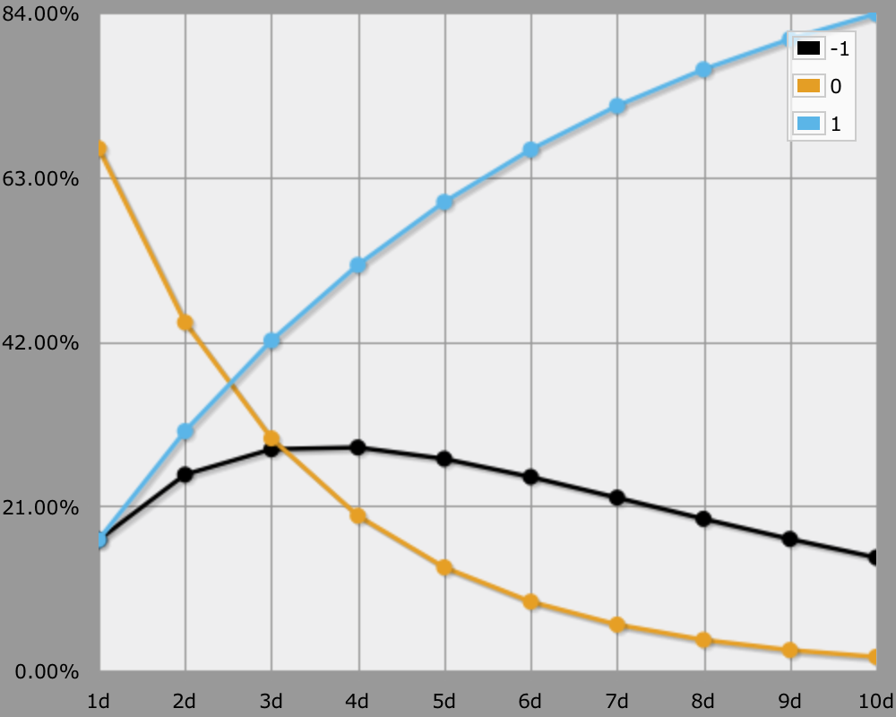

The Questing Beast
Modding The Pool
The Questing Beast is an RPG written by James V. West, who also wrote The Pool.
TQB is a great example of modifying a dice mechanic, in this case The Pool's. The difference with The Pool is that TQB has three possible outcomes of a roll, instead of just two. Roll at least one 1, and you're successful. If not, but roll at least one 6, and you have failed. If not, then you have a "Guided Event".
When using this system, the chance of victory remains unchanged, but failure is partially replaced by the "Guided Event". This outcome is a mixed blessing, because the player loses control of what happens, but it's also the only way they can increase their pool.
And here's how to get the odds with AnyDice.
function: interpret ROLL:s {
if [count 1 in ROLL] { result: 1 } \ success \
if [count 6 in ROLL] { result: -1 } \ failure \
result: 0 \ guided event \
}
loop DICE over {1..10} {
output [interpret DICE d6] named "[DICE]d"
}

| Dice | Odds | Defeat | Guided |
|---|---|---|---|
| 1 | 16.67% | 16.67% | 66.67% |
| 2 | 30.56% | 25.00% | 44.44% |
| 3 | 42.13% | 28.24% | 29.63% |
| 4 | 51.77% | 28.47% | 19.75% |
| 5 | 59.81% | 27.02% | 13.17% |
| 6 | 66.51% | 24.71% | 8.78% |
| 7 | 72.09% | 22.06% | 5.85% |
| 8 | 76.74% | 19.35% | 3.90% |
| 9 | 80.62% | 16.78% | 2.60% |
| 10 | 83.85% | 14.42% | 1.73% |